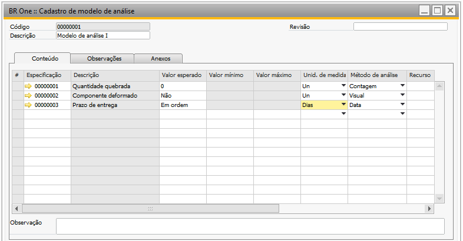
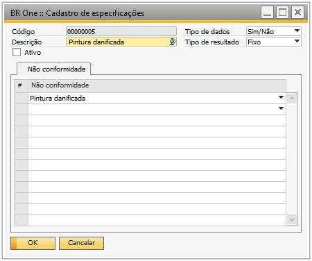
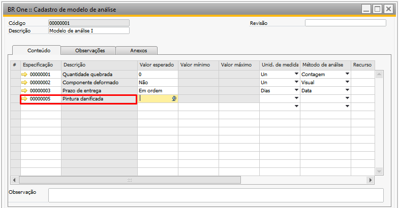
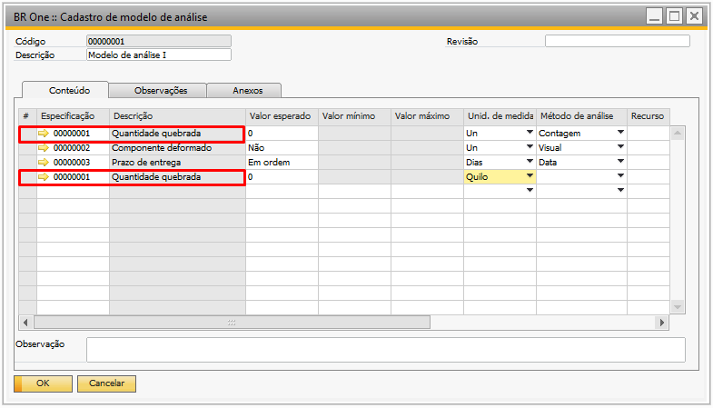

Modelo de análise
Para acessar o Cadastro modelo de análise é necessário ir no menu:
Administração -> Qualidade -> Modelo de análise
Na tela “BR One :: Cadastro de modelo de análise” são cadastrados os modelos de análise possíveis para a criação das fichas de análise.
O campo “Código” será gerado automaticamente pelo add-on.
As linhas deverão ser preenchidas com as especificações cadastradas na tela “BR One :: Cadastro de especificações”. É importante destacar que os valores inseridos nas colunas Valor esperado, Valor mínimo e Valor máximo precisam estar em conformidade com os tipos de dados e os resultados especificados na própria especificação.
Na coluna “Unidade de Medida”, é possível escolher uma das unidades de medida previamente cadastradas na tela de “BR One :: Cadastro de unidades de medida”.
Na coluna “Método de Análise”, poderá selecionar um dos métodos registrados na tela de “BR One :: Cadastro de métodos de análise”.
O campo “Recurso” carregará os recursos do tipo Máquinas e Ferramentas que estiverem ativos.
Na coluna “Observações”, é possível adicionar informações específicas para a respectiva linha.
Caso nenhum valor seja inserido no campo Descrição, uma mensagem de erro será exibida da seguinte forma:

BR One :: O campo ‘Descrição’ deve ser preenchido.
Caso não seja informado um valor para Especificação nas linhas, será exibida a seguinte mensagem de erro:
BR One :: Defina a especificação em todas as linhas
Caso seja feita a tentativa de remover um modelo de análise que já esteja sendo usado, será exibida a seguinte mensagem de erro:
BR One :: O modelo já está vinculado a um item. Impossível excluir.
Se uma tentativa for realizada para adicionar ou atualizar um registro onde os valores das colunas Valor Esperado, Valor Mínimo e Valor Máximo não estejam coerentes, uma validação na transaction será acionada para bloquear o usuário de prosseguir.
Para esse cenário, será exibida uma mensagem, indicando o erro específico:
(-1) BR One :: Erro na linha da especificação “X” Linha: 1. O campo [Valor máximo] deve ser maior que o campo [Valor mínimo].
(-1) BR One :: Erro na linha da especificação “X” Linha: 1. O campo[Valor esperado] deve estar no intervalo dos campos [Valor mínimo] e [Valor máximo].
Se uma tentativa de adicionar ou atualizar um registro for feita com uma especificação que não esteja ativa, conforme exemplo abaixo, uma validação na transction será ativada para bloquear o usuário de continuar. Uma mensagem de erro será exibida.
 (-2) BR One :: A especificação “X” está desativada. É obrigatório que todas as especificações das linhas estejam ativas.
É possível utilizar a mesma especificação em mais de uma linha do modelo de análise.
